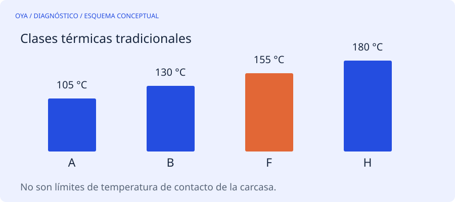

Tres temperaturas que responden preguntas distintas
La clase térmica describe el sistema de aislamiento y su capacidad térmica bajo las condiciones correspondientes. La elevación de temperatura es cuánto sube el devanado respecto al ambiente. La temperatura de carcasa es una medida superficial que depende del intercambio de calor y del punto donde se mida.
No es correcto tomar la cifra de una clase de aislamiento como límite de contacto para la superficie del motor. Una carcasa puede causar quemaduras a temperaturas muy inferiores a 155 °C. Tampoco permite conocer directamente el punto más caliente del bobinado.
Una referencia, no una aceptación universal
Las designaciones tradicionales A, B, F y H se asocian con 105, 130, 155 y 180 °C. Para ciertos motores NEMA de factor de servicio 1,0 y ambiente de referencia de 40 °C, se encuentran elevaciones por resistencia de 60, 80, 105 y 125 °C respectivamente. Esos valores no deben trasladarse sin más a todos los tamaños, tecnologías y normas.
| Clase | Índice térmico tradicional |
|---|---|
| A | 105 °C |
| B | 130 °C |
| F | 155 °C |
| H | 180 °C |
Un motor con aislamiento F puede estar diseñado para una elevación B. Esa combinación conserva margen térmico; no exige que el devanado alcance la temperatura superior. La placa, la ficha y la norma aplicable explican qué condiciones corresponden a la máquina concreta.
Por qué un termómetro infrarrojo no resuelve todo
El resultado depende de emisividad, acabado de pintura, reflejos, distancia y tamaño del punto observado. Medir una zona brillante puede producir lecturas engañosas. Incluso una lectura superficial correcta no equivale a medir el cobre situado dentro de la ranura.
Los sensores incorporados y la estimación por resistencia tienen usos distintos. Una PTC puede actuar como protección sin proporcionar una lectura continua exacta de temperatura; una RTD requiere su correspondiente circuito de medida. No deben sustituirse ni puentearse para que el motor siga funcionando.
Qué revisar cuando sube la temperatura
Además de carga y corriente, considera ventilación, suciedad, sentido de giro del ventilador cuando sea relevante, temperatura ambiente, altitud y velocidad de operación. Un variador que mantiene par a velocidad baja puede dejar al motor con menos refrigeración propia. También influyen desequilibrio de tensión, condiciones mecánicas y frecuencia de arranques.
Cambiar el esmalte no cambia toda la máquina
Utilizar un alambre de clase superior no convierte automáticamente el conjunto en un motor de mayor clase térmica. El sistema incluye aislantes de ranura, separadores, barniz, terminales y compatibilidad de materiales. Rodamientos y lubricantes tienen además sus propios límites.
Una reparación debe respetar el sistema de aislamiento especificado y documentar las modificaciones autorizadas. El objetivo no es aprovechar una cifra mayor para aceptar cualquier calentamiento, sino verificar que el motor cumple su servicio con un margen razonable y sus protecciones operativas.
Fuentes y alcance
Referencia de consulta: ABB: placa, clase de aislamiento y elevación térmica. Los ejemplos numéricos son educativos y no describen un trabajo realizado.